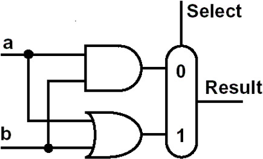
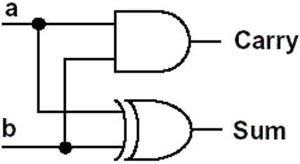
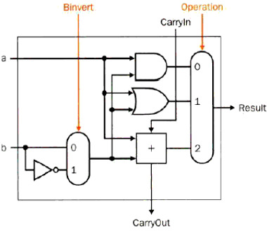

2. Arithmetic for computer 计算机运算¶
2.1 数据表示：浮点数/无浮点数¶
2.1.1 二进制数的表示¶
- K进制的数的表示方式 \(N=\sum\limits_{i=m}\limits^{n-1}b_i\times K^i\) 其中0-n-1是整数位，-1到m是小数位
- 无符号数：n位二进制无符号数可以表示的值的范围是：0到\(2^n-1\)
-
有符号数：把最高位用来表示数的正负，0表示正数，1表负数
- 存在的问题：存在正0(0000 0000)和负0(1000 0000)两种0
-
二进制数的一些操作
- 对应的十进制数的计算方式是：对于n位有符号的二进制数，最高位的权重是\(-2^{n-1}\),其余位的权重是\(2^{n-1}\),将权重相加就得到了对应的十进制数
- 二进制的位扩展(sign extension)：把符号位扩展到高位的每一位
- 比如4位的1010扩展成8位就是11111010
- 大小比较(MIPS指令)
- 有符号数之间的比较用slt和slti(和立即数比较)
- 无符号数之间的比较用sltu和sltiu
2.1.2 各种二进制码¶
-
**有符号数**的三种🐎：原码，反码，补码和移码
-
能用这些码表示的都按照有符号数来处理
- 原码：由符号位+绝对值组成，最高位是符号位0或1，其余位是原本数字的**绝对值**表示
- 反码：由原码到补码的一种中间形式
- 正数的反码就是其本身
- 负数的反码是**符号位不变**，其他位依次取反
-
Two's Complement 补码
- 正数的补码还是本身，负数的补码**按位取反之后加1**，对于负的整数\([X]_{c}=2^{n+1}-|X|\)
-
overflow
- 对于N位二进制数，如果数值小于\(-2^{N-1}\)或者大于\(2^{N-1}-1\)即为溢出
- 无符号数不考虑溢出的情况
-
移码(biased-code)的表示
- 由符号位+绝对值组成，计算的方法是**补码的最高位取反**
- 比如-128的补码是1000 0000，其对应的移码就是0000 0000
- 127的补码是0111 1111，其移码就是1111 1111
-
三种🐎的比较(8位数字的情况下)
| 类型 | 原码 | 补码 | 移码 |
|---|---|---|---|
| 范围 | -127-127 | -128-127 | -128-127 |
| 最小数 | 1111 1111 | 1000 0000 | 1000 0000 |
| 最大数(+127) | 0111 1111 | 0000 0000 | 1111 1111 |
| 0 | 0000 0000 1000 0000 |
0000 0000 | 1000 0000 |
| 优点 | 直观 | 加减运算方便 | 大小上数码完全一致 |
| 缺点 | 同号异号，运算麻烦 | 大小比较需要单独处理 | 符号位和别的码不同 |
2.2 汉字系统¶
- ASCII码：美国信息交换标准码
- 标准的ASCII码只有7位，但是为了方便计算机处理，扩展成了1字节(8位)
- ASCII码中有128个字符，其中可打印字符96个，控制字符32个
- 后来因为128个字符不够又扩展了新的128个
- 常见的ASCII码：A位于65，a位于97
- 汉字的表示
- GB2313区位码
- 输入码：五笔，拼音等等
- 字模码：
- 用8x8的点阵表示ASCII码
- 用16x16的点阵表示汉字，可以用16个16位的二进制数来表示一个汉字
2.3 Addition & Subtraction¶
-
加减法
-
加法：原码直接相加，进位给下一位
- 减法：直接相减，或者将两个数的补码相加(此时得到的结果是补码)
- overflow，比如1111 1111+1111 1010 = 1 1111 1001，1000 0001 + 1111 1110 = 0111 1111

- MIPS中处理溢出的方式是**interrupt**，溢出指令的地址被**保存在寄存器中**，计算机跳到预定地址以为该异常调用适当的例程。中断的地址将被保存，以便在某些情况下程序可以在执行纠正代码后继续执行
- 其他的处理方式还有：在ALU中进行硬件检查；interrupt和EPC存储指令地址
- 符号数加法的MIPS代码
 - 无符号数加法的MIPS代码
- 取相反数的运算方式：将数字和0进行nor运算
- 无符号数加法的MIPS代码
- 取相反数的运算方式：将数字和0进行nor运算
 - 加法器的设计
- 加法器的设计
-
最简单的一位ALU：进行and或者or操作

-
一些名词的简称
- OF: overflow 判断是否溢出，最高进位和次高进位的**异或**
- CF: CarryOut 进位的值
- ZF：zero，当结果为0的时候ZF=1，否则是0
- SF：符号位的判断，正0负1
- PF：奇偶校验
-
半加器 half adder(不能和进位Carryout进行运算)
sum = a xor b,carry = a or b其设计如下

-
全加器 full adder
- 运算规则,本位和\(Sum=A/oplus B/oplus Carry\)，进位\(Carry=AB+BCarry+CarryA\)
- 二阶全加器的设计
 - 1 bit的ALU的设计：包含AND, OR , ADD三种指令
- 1 bit的ALU的设计：包含AND, OR , ADD三种指令
- 可以通过输入的值operation来控制输出结果，比如operation=0输出的就是and运算的结果
- 第一个Carry in的值是0
 - 32-bit的ALU：实际上是32个1bit的ALU连接起来进行运算
- 32-bit的ALU：实际上是32个1bit的ALU连接起来进行运算
- 如果是逻辑运算，就是32个1bit的ALU分别输出对应位上逻辑运算的结果，然后输出
- 如果是算术运算，Carry In和Carry Out会在ALU之间按顺序传递下去，实现加法的进位
-
1bit ALU的扩展：支持减法
- 此时操作码还是3种，参数Binvert控制第二个运算数是否取反

- 由于支持减法，因此ALU也可以支持大小的比较，比较大小的操作码为2
- 加入一个Less输入作为大小判断时的输出
-
32-bit的完全ALU
 - 还可以对32个result添加一个zero检查器
- 还可以对32个result添加一个zero检查器
-
加法器的基本原理
- 完全串行的进位方式，一次运算需要3个与门，2个或门，消耗2份的时间，完成32位全加法需要的时间是一次加法运算的的32倍
- 并行计算的进位方式，进位的ci计算全部转换成第一位的a0,b0,c0的=，依次进行迭代
- 先行进位(并行)用\(g_i=a_ib_i,p_i=a_i+b_i\)来简化运算
- 组内并行，组之间串行：4位一组
-
ALU：算术逻辑单元
-
一个最基本的ALU的结构图如下图所示
 - ALU控制线路：000对应and，001对应or，010对应add，110对应sub，111对应less than
- ALU控制线路：000对应and，001对应or，010对应add，110对应sub，111对应less than
2.4 Multiplication && Division¶
- 和十进制乘法一样，可以列竖式计算
- 一一乘法口诀表：00得0，11得1，01得0，10得0
-
乘法得两个因数分别叫做multiplicand和multiplier
-
乘法算法1
-
Binary multiplication 列竖式计算，具体过程就和十进制一样
-
逻辑图：乘数是32位，被乘数，积和ALU是64位

- 需要32次迭代，计算非常缓慢，需要64位加法器1个，64位寄存器2个，32位寄存器1个，移位2次
 - 乘法算法2
- Don’t shift the multiplicand，Instead,shift the product，Shift the multiplier
- 逻辑图，积的寄存器的左半边才会进行change
- 乘法算法2
- Don’t shift the multiplicand，Instead,shift the product，Shift the multiplier
- 逻辑图，积的寄存器的左半边才会进行change
 - 2个64位的寄存器其中一个变成了32位
- 2个64位的寄存器其中一个变成了32位
 - 乘法算法3
- 1个32位加法器，1个64位寄存器，1个32位寄存器，移位操作1次
- 乘法算法3
- 1个32位加法器，1个64位寄存器，1个32位寄存器，移位操作1次

2.4.1 有符号数的乘法¶
- 补码乘法
-
\((A\times B)_{补}=A\times B_{补}\) 已知AB的补码，可以把A转换成原码和B的补码进行计算
-
无符号数的补码之积等于积的补码
-
Booth 算法⭐⭐⭐
- 基本原理：用于**二进制补码的相乘**的运算，从最低位开始，只要这串数字为0就不执行任何操作，当遇到第一个1时执行一次减法，也就是减去被乘数和该位权值的积，对于后面的1不进行操作，再碰上0就加权值，如此往复
- 两个因数都用补码的形式参加乘法运算，结果是积的补码
- 加速的原理
- Booth算法会导致addition减少而shift增加，如果shift的效率更高就会使得运算加快
- 也就是需要判断连续的两位
- 10 减去1所在位置的权重
- 00 不进行操作
- 11 不进行操作
- 01 加上0所在位置的权重
- 为了方便，把第-1位当作0来使用
2.4.2 二进制数的除法¶
-
Dividend = quotient x divisor + remainder 被除数=商x除数+余数
-
算法1
-
需要64位加法器1个，64位寄存器2个，32位寄存器1个，移位操作两次
 - 算法2
- 算法2
- 需要32位加法器1个，64位寄存器1个，32位寄存器2个，移位操作两次
 - 算法3
- 算法3
- 需要32位加法器1个，64位寄存器1个，32位寄存器1个，位移操作2次

- 有符号数的除法
- 基本原则：计算商的时候把除数和被除数都当作正数，得出一个非负数的商，然后根据除数和被除数的符号确定商的符号，在根据关系计算余数
- 比如7/2=3余1，而-7/2=-3余-1，7/-2=-3余1，-7/-2=3余1
- 除数不能为0，负责会overflow
2.5 Float 浮点数的表示——IEEE754标准¶
- IEEE制定的舍入规则
- ceil 向上取整
- floor向下取整
- int 抹去小数部分
-
三个特殊的数字
NaN(Not a Number), 正负无穷大 -
二进制的浮点数的表示方式是
1.xxxxxxxx * 2^yyyyyy，类似于十进制中的科学计数法，
用公式表示为\(x=(-1)^s\times 1.M\times 2^{E-127}\)
- E是阶码，一定是一个非负数，表示的范围是0-255(float中)，0-1023(double中)
- M也叫significand，E叫exponent
- 浮点数的精度：用S+E+M的顺序来表示一个浮点数
- 单精度浮点数(float)中s占1位，E占8位，M占23位，一共32位
- 双精度浮点数(double)中s占1位，E占11位，M占52位，一共64位
-
浮点数进位的计算方式：
- 先确定符号位S，将数字取绝对值
- 将数字转换到1.多的范围里，然后确定E，获取尾数M的十进制表示
- 将M转换成23位二进制，具体方法是不断*2，如果结果超过，取整数部分作为每一位上的结果
- 注意尾数需要四舍五入，也就是计算24位，如果24位是1就在前23位向上进1
-
浮点数的加减法
- 把十进制的全部转换成二进制浮点数的原码
- 将小数点对齐，进行加法运算
- 说了半天其实真的算起来加减乘除都要靠转化成十进制来计算
本文总阅读量次
创建日期: 2023年1月25日 17:15:47